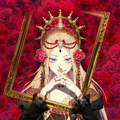
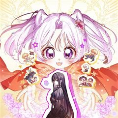
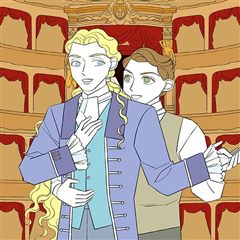

카카오웹툰 추천 인기 순위 TOP 30
카카오웹툰에서 지금 연재 중인 작품을 카카오웹툰 공식 인기 순위 순서로 모았어요. 네이버웹툰·카카오웹툰·레진코믹스에서 조건에 맞는 작품 944개 중 인기 순으로 30개를 골랐어요. 인기 TOP 3: 잊혀진 들판, 무한의 마법사, 천광명월
2026-10-13 기준 · 성인 작품 제외
내 취향으로 더 좁혀서 추천받기 →-
1

카카오웹툰잊혀진 들판
- 난 매일 기도해 이 사랑이 죽기를 오늘까지만 너를 사랑하고 내일은 이 사랑이 죽어 있기를 - 불륜으로 태어난 비운의 황녀, 탈리아 로엠 귀르타. 그녀는 무관심한 부모와 적대적인 이복형제들, 그리고 자신을 경멸하는 하인들 틈에서 일그러진 채 자란다. 다가오는 모든 이들에게 가시를 곤…
자극적인눈물샘자극로판카카오웹툰에서 보기 → -
2
 카카오웹툰
카카오웹툰무한의 마법사
마굿간에 버려져 평민으로 키워진 아이, 시로네. 타고난 통찰력으로 글까지 깨우친 아이는 도시로 나간 어느 날 그토록 궁금해하던 마법을 경험한다. 그 길로 마법사를 꿈꾸게 된 시로네. 하지만 신분의 장벽이 두터운 이 곳은 아이에게 냉혹하고, 그는 채 어른이 되기도 전에 이 세상의 이면을…
미스터리학원물성장물카카오웹툰에서 보기 → -
3

-
4
 카카오웹툰
카카오웹툰수린당 성군전
[수린당 성군전] 선계와 인간계를 이을 단 한 명의 성군, ‘한울’. 지덕체를 두루 갖춘 완벽한 아이의 탄생에 선계의 신들은 신이 났다. 그것도 아주 지나치게! 과도한 기대는 때론 독이 될 수도 있는 법. 한울이를 금쪽이가 되지 않게 밝고 바른 아이로 키울 수 있을까? 성군의 운명을…
힐링카카오웹툰에서 보기 → -
5
 카카오웹툰
카카오웹툰템빨
[신영우 (유저 네임: 그리드)] 세계 최고의 가상 현실 게임 <SATISFY>. 현실에서나, 게임 속에서나, 불운은 항상 그의 곁을 맴도는데.... 퀘스트 수행 중 우연히 발견한 게임 속 로또, '파그마의 기서'. 20억 명이 넘는 유저 중 유일한 최강의 레전드리 직업으로 전직. "…
사이다학원물게임판타지카카오웹툰에서 보기 → -
6
 카카오웹툰
카카오웹툰결혼 장사2 ~잊히지 않을 노래~
고귀한 자리에 올랐으나 가족도 권력도 사랑도… 그 무엇도 가지지 못했던 왕, 시릴 드 세브랑. 유일한 구원이자 전부였던 알렉산드라를 지키지 못하고 죽임을 당했을 때, 그는 알 수 없는 힘에 의해 10년 전으로 되돌아가게 된다. 아직 알렉산드라가 아르노의 공녀로 기사의 꿈을 꾸며, 성자…
성장물로판타임슬립카카오웹툰에서 보기 → -
7
 카카오웹툰
카카오웹툰막내가 뭔갈 많이 숨김
마법사 소년병으로 개고생하던 전쟁터에서 전생의 기억이 떠올랐다. 그리고 이곳이 <폐허 위에 꽂은 검> 소설 속이라는 것도. 하필이면 종말의 몰살엔딩이 예정된 전쟁 소설 속에 빙의했냐고!! 끔찍한 결말을 피하자면 ‘영웅’ 레비아탄 제베르트 옆에 딱 붙어 그가 죽지 않도록 잘 감시해야 한…
힐링로판육아물카카오웹툰에서 보기 → -
8
 카카오웹툰
카카오웹툰군림천하
"너만은 꼭 군림천하 해야 한다!” 그 한마디로 진산월의 운명이 결정됐다. 스물세 살, 그는 종남파의 장문인이 되었다. 남은 이들은 단 8명의 제자뿐. 한때 천하제일을 꿈꿨지만, 지금은 명맥만을 잇는 문파. 사부의 유지를 위해, 살아남기 위해— 진산월은 비정한 강호로 나아간다.
자극적인성장물액션카카오웹툰에서 보기 → -
9
 카카오웹툰
카카오웹툰이번 생은 가주가 되겠습니다
“…한번 해 보자. 내가 가주가 되는 거야.” 제국에서 제일가는 가문, 롬바르디의 사생아로 환생한 피렌티아. 게다가 이 가문은 막대한 부는 물론 외교와 문화까지 통달한 말그대로 제국의 역사 자체! 금수저 오브 금수저 인생 당첨! 앞으로는 탄탄대로일 거라 생각했는데…. 아버지는 돌아가시…
사이다로판회귀카카오웹툰에서 보기 → -
10
 카카오웹툰
카카오웹툰남궁세가 손녀딸의 귀환
혈마의 소교주 일화는 스승인 혈마의 뜻에 따라 남궁세가를 멸문시키지만, 혈마의 배신으로 인해 죽음을 앞두고 충격적인 이야기를 듣는다. “이제 천하에 남궁은 너 하나 남았다.” 일화는 자신이 남궁세가에서 오래전에 잃어버린 아이 ‘설화’였고, 간악한 혈마의 수작질을 위해 키워졌단 걸 알게…
로판회귀카카오웹툰에서 보기 → -
11
 카카오웹툰
카카오웹툰황제와 비밀 연애 중인데 나는 그걸 몰라
전쟁광 폭군이 햇살캐 성녀 여주와 사랑에 빠지는 로판 속, 원작 줄거리와 전-혀 상관없는 엑스트라로 환생한 '캐롤리나'. 세기의 로맨스보다 내일의 야근 여부가 더 중요한 소시민 리나의 평범한 일상에도, 어느 날 운명처럼 빛나는 외모의 남자친구가 찾아왔는데... ...그땐 몰랐다. ".…
설렘폭발로판로맨틱코미디카카오웹툰에서 보기 → -
12
 카카오웹툰
카카오웹툰픽 미 업!
그 누구도 던전의 끝까지 오르지 못한 극악의 난이도를 자랑하는 모바일 가챠 게임 <픽 미 업!(Pick me up!)> 마스터 오브 마스터라 불리는 세계 랭킹 5위의 마스터 '로키'는 던전을 깨던 중 정신을 잃게 된다. 깨어나 보니 레벨도 1, 등급도 1성인 <픽 미 업!> 속 영웅…
사이다액션게임판타지카카오웹툰에서 보기 → -
13
 카카오웹툰
카카오웹툰악어
19세의 나이, 살인을 저지르고 10년의 수형 생활을 마친 정인후. 출소 후 삶을 꿈꾸지만 현실을 쉽지않다. 그러던 어느 날, 과거 자신이 죽인 김상철의 아내 윤진희가 찾아와 아들 김루환의 경호를 제안한다.
자극적인액션느와르카카오웹툰에서 보기 → -
14
 카카오웹툰
카카오웹툰너에게 빼앗을 왕관
내 평생을 바쳐 사랑한 사람. 그러나 사랑이라 믿었던 것은 배신이었고, 왕이었던 오라비는 나의 무지로 인해 죽었으며, 조국은 소리 없이 처참히 무너졌다. “다시… 돌아왔어.” 하지만 이번 생은 다를 것이다. 숙부에게 주어졌던 영광은 전부 빛을 잃을 것이며, 남편이 바랐던 찬란한 왕관은…
로판복수극카카오웹툰에서 보기 → -
15
 카카오웹툰
카카오웹툰인소의 법칙
인터넷 소설 읽기가 취미였던 평범한 학생 함단이. 어느 날 자고 일어나니 옆집에는 아주 예쁜 여학생 반여령이, 학교에는 그 이름도 무시무시한 사대천왕이 나타났다! 하루아침에 소설처럼 뒤바뀐 세계, 그리고 함단이의 역할은 다름 아닌 여주인공 소꿉친구 중 하나. [인터넷 소설의 법칙!]…
차원이동카카오웹툰에서 보기 → -
16카카오웹툰
임신한 척했는데 남편이 돌아왔다
아버지의 죽음으로 하루아침에 빚쟁이 남작이 되어버린 유디트. 자신이 전생에 읽었던 소설 속에서 환생했다는 걸 깨달았다. 소설의 전개를 이용해 빚을 갚아 나가기로 한 유디트는 실종된 아들의 가짜 아내가 필요한 공작저에 계약직 며느리로 들어간다. 빚도 갚고, 평생 못 누릴 호사도 누리고.…
로판환생카카오웹툰에서 보기 → -
17
 카카오웹툰
카카오웹툰악녀라서 편하고 좋은데요?
"악녀라서 뭐? 편하고 좋기만 한데?" 2020년 카카오페이지 올해의 웹소설 <악녀라서 편하고 좋은데요?> 웹툰으로 화려하게 다시 태어나다! 은수저X, 금수저X :+: 오리하르콘 수저 :+: 악녀로 빙의한 윤도희 180,000,000도 인생 역전에 성공한다. 소심한 본체 그렇지 못한…
사이다로판빙의카카오웹툰에서 보기 → -
18
 카카오웹툰
카카오웹툰검술명가 막내아들
진 룬칸델 대륙 최고의 검술명가, 룬칸델의 막내아들 룬칸델 역사상 최악의 둔재 비참하게 쫓겨나 허무한 최후를 맞이한 그에게 다시 한 번 기회가 주어졌다. “너는 이 힘을 어떻게 사용하고 싶더냐?” “저를 위해 사용하고 싶습니다.” 전생의 기억과 압도적인 재능, 그리고 신과의 계약 최강…
액션회귀카카오웹툰에서 보기 → -
19
 카카오웹툰
카카오웹툰해골병사는 던전을 지키지 못했다
나는 ‘해골병사’. 주인인 서큐버스님을 용사로부터 지키지 못하고 그저 하찮게 부서져 버린 일개 몬스터. 그렇게 죽음을 맞이하는 줄 알았다. 그러나 정신을 차려보니, 20년 전 사령술사에 의해 눈을 뜬 그 날로 돌아왔다. ‘띠링!’ 남들에게는 보이지 않는 상태창과 함께, 죽어도 죽어도…
미스터리서스펜스학원물게임판타지카카오웹툰에서 보기 → -
20
 카카오웹툰
카카오웹툰이상한데 효과적인 악녀 생활
제국의 최고 명문 프렐라이 공작가의 막내 손녀이자 천재 마법 공학 박사인 키아나 프렐라이. 콩가루 집안에서 가출한 후 촌구석 상아탑에 처박혀 논문 찍는 기계처럼 연구에 매진한 지 7년. 갑자기 들이닥친 군사들에 의해 제국으로 끌려갔다. 아니, 할아버지가 역모를 꾀했다고?!!! 교수형…
개그로판회귀카카오웹툰에서 보기 → -
21

카카오웹툰악녀 언니를 구하러 온 용감한 강아지입니다
내 이름은 코코. 하얗고 복슬복슬한 털이 아주 멋진 강아지죠. “다음 생이 있다면 부디 언니 딸로 태어나 줘. 응?” 언니와 행복한 견생을 보내고, 무지개 다리를 건넜는데. '헉, 내가 죽은 후에 언니가 맨날 울기만 하잖아!' 안 돼! 우리 언니의 행복한 삶은 용감한 강아지가 지킨다!…
로판인외존재카카오웹툰에서 보기 → -
22
 카카오웹툰
카카오웹툰오무라이스 잼잼
'음식'과 '가족'의 이야기를 담은 에세이 만화. 몇 개라도 먹을 수 있을 것 같은 '메추리알 조림', 빙글빙글 돌아가는 '회전초밥', 지구 반 바퀴 돌아 포르투갈에서 맛본 '에그타르트', 매콤상콤하게 볶아 입맛 도는 '마라샹궈', 짭짤한 밥도둑 '간장게장' 등 우리가 사랑하는 모든…
공감음식&요리카카오웹툰에서 보기 → -
23
 카카오웹툰
카카오웹툰가드패스
평소 먹는 것을 좋아해 뚱뚱하고 큰 체격을 가진 '임세준'. 그는 뚱보라는 놀림에도 신경 쓰지 않는 자존감이 높고 확고한 성격을 가졌다. 그에게 단 한 명의 친구 '서하진'. 그녀는 어릴 적부터 세준을 지켜주기 위해 늘 운동을 배워왔다. 어느 날 세준은 같은 반 일진과 트러블이 생기고…
사이다학원물배틀카카오웹툰에서 보기 → -
24
 카카오웹툰
카카오웹툰적룡무제
압도적인 무력으로 천하무림을 일통한 무림의 절대지존 무제(武帝), 이환. 천수를 다하고 영면에 들었으나, 버림받은 황자의 몸으로 깨어나고 만다. 게다가 그의 모든 것이었던 대야성은 멸망하고 역사에서도 철저하게 지워진 뒤인데… “되돌려 놓으면 그뿐.” 잃었던 모든 걸 되찾고, 천하에 군…
사이다액션빙의카카오웹툰에서 보기 → -
25
 카카오웹툰
카카오웹툰대사형 선유
삼류 낭인 곽노의 손에 거둬진 아이들. 사제관계를 맺고 아이들은 어설프게나마 무공과 보법 수련을 하며 각자의 꿈을 꾼다. 먹고살기 위해 곽노는 늘 자리를 비워야 했고, 아이들 중 맏이인 선유는 사제들을 돌봐야 한다. 그는 대사형大師兄이다.
눈물샘자극액션가족카카오웹툰에서 보기 → -
26
 카카오웹툰
카카오웹툰지옥사원
인간의 음식에 매료된 악마 쿼터, 사고로 흙수저 인간에게 빙의하다?! 능력을 모두 잃고 인간 <고순무>의 몸에 갇힌 악마는, ‘낮은 등급’ 인간의 삶이 지옥에서의 삶보다 질이 떨어지자 ‘높은 등급’ 인간이 되기로 결심한다. 한 편, 국내 최고의 대기업 <선호 그룹>에선 학력과 경력을…
오피스카카오웹툰에서 보기 → -
27

카카오웹툰카스트라토 ~거세 가수 이야기~
카스트라토는 아름다운 목소리를 유지하기 위해 성기 일부를 잘라낸 남성 가수를 말한다. 18세기 이탈리아 오페라가 꽃피우던 시기가 이들의 전성기였다. 음악학교이자 수도원인 피에타 데이 투르키니에서 어린 카스트라토 니콜라와 작곡가 지망생인 파트리크는 만나게 된다. 그리고 두 사람은 영원한…
개그성장물카카오웹툰에서 보기 → -
28
 카카오웹툰
카카오웹툰왕자님은 양파 따위에 울지 않는다
염병할 전쟁이 끝났다. 그로부터 3년. 이 시골 마을도 제법 안정된 것 같…… 은데. 웬 곰 같은 부랑자가 우리 식당에 쳐들어와 헛소리를 한다. “전쟁 중, 귀하의 아버님에게 진 빚을 갚으러 왔습니다.” 그런데 이 자식은 자기가 뭘 빚졌는지도 모른댄다. 아버지는 전쟁 중 돌아가셔서 뭘…
힐링로판로맨틱코미디카카오웹툰에서 보기 → -
29
 카카오웹툰
카카오웹툰철혈검가 사냥개의 회귀
바스커빌 가문의 사냥개 '비키르'. 사냥개로서 가문에 충성한 보답은 모함과 누명으로 얼룩진 단두대의 칼날이었다. "다시는 토끼를 잡고 나면 삶아지는 사냥개처럼 살지 않겠노라." 그런 그에게 죽음 대신 찾아온 뜻밖의 기회. 어둠 속에서 송곳니를 갈고닦는 비키르의 눈이 붉게 빛났다. "기…
학원물복수극카카오웹툰에서 보기 → -
30카카오웹툰
망나니 1왕자가 되었다
검으로 환생해 수백년을 살며 평생 남 뒤치다꺼리만 했다. 그러다 덜컥, 열다섯 망나니 1왕자의 몸을 차지하게 되었다. "내가 키운 애들이 몇인데." 불패라 불리던 위대한 기사, 광룡을 쓰러뜨린 드래곤 슬레이어, 용병왕 등. 전부 내가 키웠다. 망나니 1왕자의 몸에 빙의한 마검 그루혼,…
빙의카카오웹툰에서 보기 →